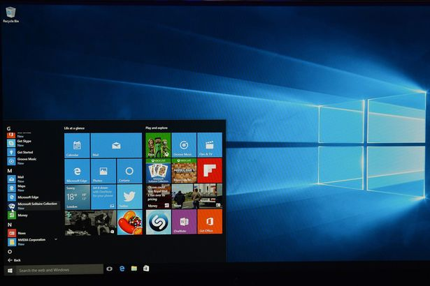

WikiLeaks has claimed the CIA planned to hack cars and trucks to carry out assassinations.
The secretive organisation said the U.S. Central Intelligence Agency used the phone's geolocation software to tap into vehicle control systems in modern cars.
The hacking organisation made the statement as it announced a huge release of confidential documents from the CIA as part of its mysterious Year Zero series, founder Julian Assange claimed.
It claims the CIA has been carrying out a global covert hacking program that exploits US and European companies.
It claims these include Apple's iPhone, Google's Android and Microsoft's Windows and even Samsung TVs, which it says "are turned into covert microphones."
Mr Assange was set to speak about Year Zero on Facebook today, but a livestream of the event was reportedly hacked. It is not clear when the event has been rescheduled to.
The group said that from October 2014 the CIA was "looking at infecting the vehicle control systems used by modern cars and trucks" to possibly enable them to "engage in nearly undetectable assassinations."
They added: "The CIA's Mobile Devices Branch (MDB) developed numerous attacks to remotely hack and control popular smart phones."
They claimed these included iPhones, which account for 14% of the market and Google Android, "which is used to run the majority of the world's smart phones (85%) including Samsung, HTC and Sony. 1.15 billion Android powered phones were sold last year."
They claimed: "Infected phones can be instructed to send the CIA the user's geolocation, audio and text communications as well as covertly activate the phone's camera and microphone."
They said the CIA could then "bypass the encryption of WhatsApp, Signal, Telegram, Wiebo, Confide and Cloackman by hacking the "smart" phones that they run on and collecting audio and message traffic before encryption is applied."
In an online statement on its website, Wikileaks also claims the attack against Samsung smart TVs was developed in cooperation with the UK's domestic intelligence agency MI5/BTSS.
Cyber criminal behind £1million David Beckham blackmail plot is on the run and fears being POISONED
It claims "Weeping Angel", developed by the CIA's Embedded Devices Branch (EDB), infests smart TVs, transforming them into covert microphones.
The organisation added: "After infestation, Weeping Angel places the target TV in a 'Fake-Off' mode, so that the owner falsely believes the TV is off when it is on.
"In 'Fake-Off' mode the TV operates as a bug, recording conversations in the room and sending them over the internet to a covert CIA server."

They also claimed the CIA also runs "a very substantial effort to infect and control Microsoft Windows users with its malware, infecting CDs, DVDs and USB sticks.
The hacking group said the publication release as part of Year Zero is from 8,761 documents and files from an isolated, high-security network situated inside the CIA's Center for Cyber Intelligence.
Wikileaks said: "Recently, the CIA lost control of the majority of its hacking arsenal including malware, viruses, trojans, weaponized "zero day" exploits, malware remote control systems and associated documentation.
"This extraordinary collection, which amounts to more than several hundred million lines of code, gives its possessor the entire hacking capacity of the CIA.
"The archive appears to have been circulated among former U.S. government hackers and contractors in an unauthorized manner, one of whom has provided WikiLeaks with portions of the archive."
"By the end of 2016, the CIA's hacking division, which formally falls under the agency's Center for Cyber Intelligence (CCI), had over 5000 registered users and had produced more than a thousand hacking systems, trojans, viruses, and other "weaponized" malware.
"Such is the scale of the CIA's undertaking that by 2016, its hackers had utilized more code than that used to run Facebook.
"The CIA had created, in effect, its "own NSA" with even less accountability and without publicly answering the question as to whether such a massive budgetary spend on duplicating the capacities of a rival agency could be justified."
Mr Assange has been under investigation by the US since 2010 when WikiLeaks published confidential military documents.
In the same year, the Swedish Director of Public Prosecution opened an investigation into sexual offences Assange is alleged to have committed.
In 2012, facing extradition to Sweden, he took refuge at the Embassy of Ecuador in London after being granted political asylum.
In August 2014, he announced he would be leaving the embassy "soon".


Have your say on this story
Comment Below